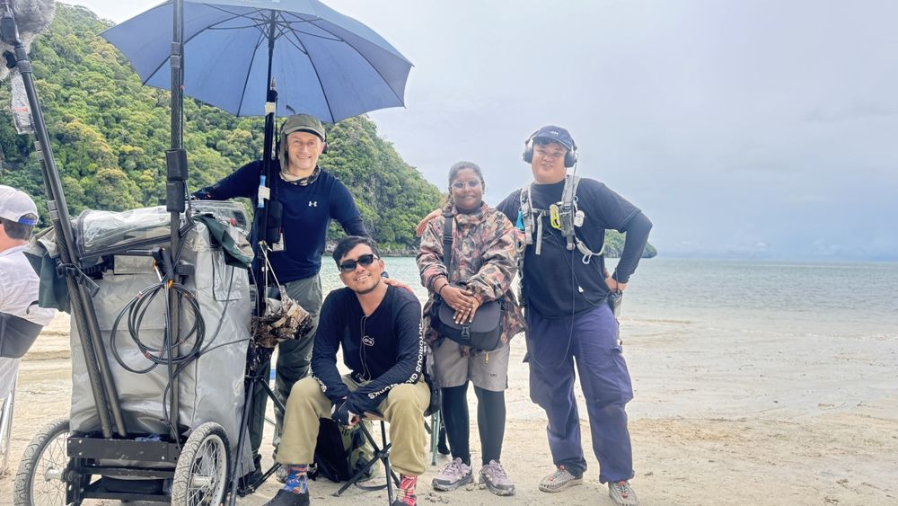

Dear friends,
Nearly twenty years ago I started my first newsletter from a flat on Mt Eden Road, Auckland, New Zealand. I was two years into my career and I wrote back then: “I am here to stay.” Still true. The map just got bigger. I’m now based in Singapore, working across Asia-Pacific, and this letter restarts here.
Before the notes, a quick word to honour Sam Neill. Every morning on Hunt for the Wilderpeople my first job was wiring Sam, he was my grounding cue for the day ahead with his classic stoic manner. The best people give so much to those around them without seeming to try and Sam was one of the very best.
Lord of the Flies is out, and Emmy-nominated for sound. Our BBC adaptation, shot almost entirely on location in the Langkawi rainforest, is streaming now across our region: Stan (Australia), TVNZ+ (New Zealand), Rock Entertainment (ASEAN) and Netflix (US). The show earned two 2026 Emmy nominations for sound. I’m named on the Outstanding Sound Mixing nomination, and the post team earned Outstanding Sound Editing. On the ground I mixed with my crew, Adyt Santoso on boom and Reza Feryanto on utilities. Without them I’m a head without arms. Four months of monsoon storms, hunting frenzies, and boys who never stood still. How did we keep the dialogue clean? See below.
Netflix is doubling down on Southeast Asia. While others pull back, the 2026 slate runs 20+ originals across Indonesia, Thailand and the Philippines, including The Red Line (Thailand), Someone, Someday (Philippines) and Made With Love (Indonesia), backed by a new two-year partnership with Indonesia’s producers’ association. I keep a running map of what’s shooting in our region. Take a look below.
Melbourne and Sydney, in person. I spent a week on the ground this month reconnecting with the Aussie scene: producers, directors, the rental floor. Australia and New Zealand, you’ll be seeing more of me. I’m on the ground more in both countries now.
A running map of productions across our patch. Opportunity, never gossip.
Waiting on the snow. Netflix’s first series set and filmed in New Zealand is rolling in Queenstown (Rufus Sewell, Frances O’Connor). I was in the Netflix Sydney office last month. Their team is already down there, waiting on the snow before the ski scenes roll.
Wisycom changed hands in ANZ. Professional Audio and Television (PAT), Sydney and Auckland, is now the exclusive distributor for Wisycom, the Italian-made wireless RF gear you'll find on F1 broadcasts, the Olympics and the top tier of drama. It's the backbone of my own kit too. I met Mike and Pat, fabulous guys who I suspect enjoy a barbecue as much as a sale. I carry Lectrosonics too, so I drop straight into US and UK crews without a re-rig.
The whole drama package fits in suitcases. 12 Wisycom radios, DPA mics, two booms, Sound Devices, timecode, all airline-checkable. On set anywhere in ASEAN in a day, ANZ the next.
Kit for hire across the region. Beyond my own jobs, I now rent Wisycom RF packages throughout ASEAN and offer full dry-hire sound kit for crews working here: radios, timecode, IFB, the lot. If you’re covering a shoot in the region and need gear that just works, please ask.
On Lord of the Flies we had a full scene played metres from a waterfall, a noise floor you cannot fight in post. The save wasn’t one trick but a stack. Boom in as tight as the frame allowed. DPA capsules rigged and re-rigged as costumes shed. And the part that made post’s day: a library of surround wild tracks captured in pristine resolution on the Sennheiser AMBEO VR mic, so the world could be rebuilt naturally in post. You can watch the scene in my showreel (around 1:20). (Booms: Adyt Santoso · Utilities: Reza Feryanto.)

To you all, if you have even 20 minutes when I’m in your city, the coffee’s on me, just like 2007.
Warmest regards,
Ande Schurr
Production Sound Mixer · Schurr Sound · Singapore · ande@schurrsound.com · schurrsound.com · IMDb · Instagram